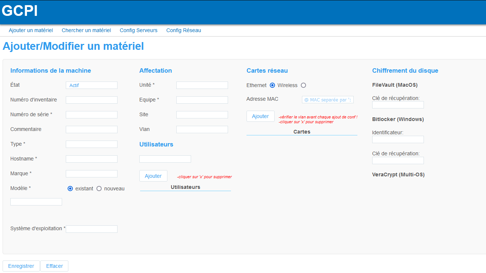
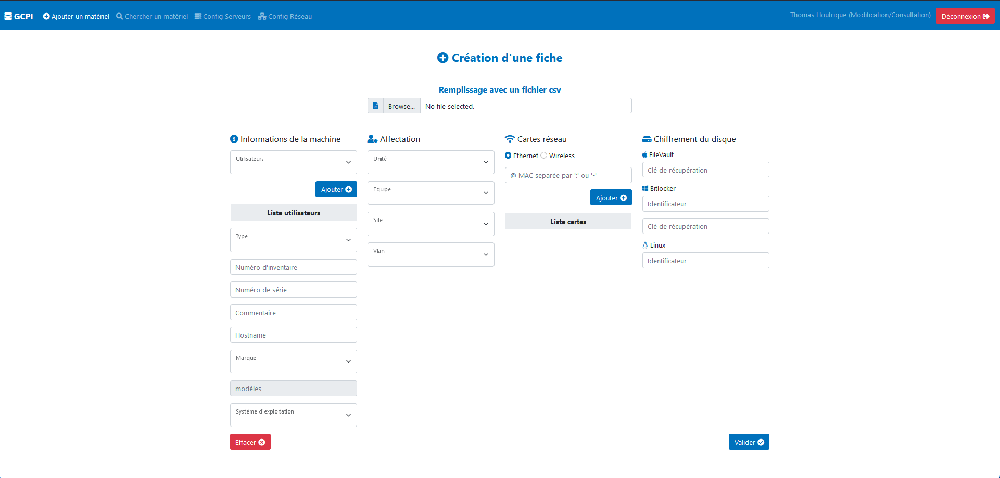

GCPI (Gestionnaire Centralisé de Parc Informatique)
Temps de lecture :
Contexte
Au sein de l'Osu les machines sont réparties sur différents réseaux en fonction des sites et sur différents vlan. Afin de piloter cette répartition nous avons un serveur DHCP par site ainsi qu'un serveur RADIUS sur chaque site. L'utilité du serveur RADIUS et de pouvoir attribué des vlan en fonction de l'adresse Mac de la machine de façon dynamique, contrairement à un tag sur la prise.
2015
Dans l'objectif d'apporter une interface graphique un premier site a était développer en 2015 permettant à chaque technicien de pouvoir déclarer des machines et des adresses Mac dans une base de données créant automatiquement les fichiers de configuration RADIUS et DHCP.
2020
Au début de mon apprentissage ce processus de remplissage de "fiche gcpi" pouvait être fastidieux et prendre du temps : chercher le numéro de série, les adresses mac et remplir correctement la fiche sans faire d'erreur pour chaque nouveau pc. J'avais donc en tête d'améliorer ce système et de le rendre automatique.
Juin 2021
A partir de juin 2021 j'ai commencé à comprendre le projet dans son ensemble (stack PHP/Javascript/MariaDB) et à réfléchir à une façon d'automatiser le processus au maximum. Après quelques prototypes j'arrive avec un script fait en python qui me permet de générer des fichiers csv avec les informations nécessaire à la création d'une fiche sur GCPI.
Juillet 2021
Avec les fichiers Csv en ma possession il me fallait désormais un moyen de les ajouter automatiquement sur le site. Avec quelques lignes de Javascript j'arrive à lire les fichiers et à en récupérer le contenu. En injectant ses informations dans les différents inputs j'arrive avec un premier prototype fonctionnel.
Aout 2021
Durant le mois d'aout j'ai réécrit une grande partie du code HTML pour passer le site sous le framework bootstrap le rendant compatible pour toutes tailles d'écrans et le modernisant par la même occasion. J'ai également ajouté de nouvelles fonctionnalités comme la possibilité d'entrer des clefs de chiffrement Linux
J'en ai également profité à la demande de L'équipe pour créer une page de statistiques afin de voir d'un coup d'oeil l'état du parc informatique.

Au milieu du mois d'aout nous avons mis ce nouveau site en production, les déclarations de machines se font désormais en quelques secondes et sans risque d'erreurs.